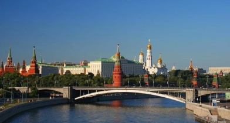
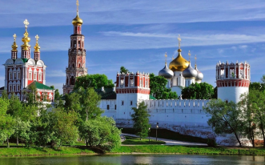
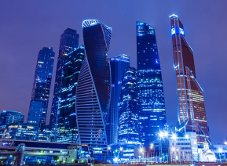
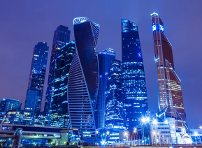

Прием заявок
Организация
Председатель конференции:
Проф. Елена Катаева
Сопредседатели конференции:
Проф. Андрей Кутин, МГУТ "СТАНКИН", Россия
Проф. Конрад Вегенер, ETH Zurich, Швейцария
Международный совет конференции:
Prof. M. Bambach (Germany), Prof. F. Bleicher (Austria), Prof. A. Borovkov (Russia), Prof. Christian Brecher (Germany), Prof. E. Budak (Turkey), Prof. G. Byrne (Ireland), Prof. P.Dasic (Serbia), Prof. K. Droeder (Germany), Prof.W-G. Drossel (Germany), Prof. Ekorkmaz (Canada), Prof. K.Jemielniak (Poland), Prof. F.Grechnikov (Russia), Prof. F.Haas (Austria), Prof. B.Karpuschewski (Germany), Prof. B.Katalinic (Austria), Dr. M.Klyuev (Russia), Dr.J. Koriath (Germany), Prof. P. Krajnik (Sweden), Prof. L. Kroll (Germany), Prof. B. Lauwers (Belgium), Prof. G.Martinov (Bulgaria/Russia), Prof. A. Matsubara (Japan), Prof. S. Melkote (USA), Prof. M.Monno (Italy), Prof. R.Neugebauer (Germany), Prof. J. Rech (France), Prof. M.Schenk (Germany), Prof. R. Schröter (Brasil), Prof. I.Smurov (Russia/France), Prof. R.Teti (Italy), Prof. A. Vasiliev (Russia), Prof. T.Zaborowski (Poland)
Место проведения конференции
Информация
Адрес:
Россия, 143025, Московская область, Одинцовский район, дер. Сколково, ул. Новая, д.100
https://common.skolkovo.ru/ru/skolkovo/contacts/Контакты
Секретариат конференции:
Телефон: +7 (499) 972-95-67
E-mail: acmt2020@stankin.ru
Сроки
Срок подачи аннотации:
Уведомление о принятии:
Подача статьи:
Уведомление предварительное:
Уведомление окончательное:
Окончательный анонс программы:
Конференция:
01 ноября 2019 г.
01 декабря 2019 г.
15 февраля 2020 г.
15 апреля 2020 г.
15 мая 2020 года
20 июня 2020 года
9-11 сентября 2020 г.


 
 

Темы конференции
Конференция будет охватывать темы:
Additive and hybrid technologies
High-Performance and Hard Machining
Digital Twins of Machine Tools, Processes and Manufacturing Systems
Precision, Ultra-Precision and Micro-Machining
Non-Conventional Processes (Laser, EDM, ECM)
Multiphysics and Multiscale Modelling
CAD/CAM/CAE - systems
Monitoring and Diagnostics
Sensors and robotics
Optimisation of Machining Processes
High-Precision Measurement
Cyber-physical production systems
Vision of the new manufacturing
Темы не ограничиваются перечисленным выше списком.
Ключевые спикеры конференции
Ключевыми спикерами конференции планируются Президент Фраунгоферского общества (Германия) проф. Р.Нойгебауер, директор Института станков и технологий Высшей технической школы Цюриха проф. К.Вегенер, ректор Санкт-Петербургского политехнического университета Петра Великого академик РАН Рудской А.И., руководители ведущих российских корпораций и предприятий (Роскосмос, Газпром, КАМАЗ).
Инструкция по подаче заявки
Публикация
Регистрационный взнос: